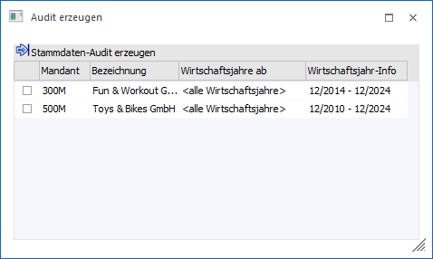
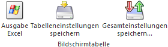

Das Variablen Audit ermöglicht es jede Veränderung von Datensätzen in der WinLine live mitprotokolliert zu lassen. Dadurch ist immer lückenlos nachvollziehbar, welche Daten von welchem Benutzer und wann (Datum) geändert worden sind.
Mit Hilfe des Programms "Audit erzeugen", welches über den Menüpunkt…
1 WinLine ADMIN
1 Audit
1 Audit erzeugen
… aufgerufen werden kann, ist es möglich Veränderungen rückwirkend protokollieren zu lassen. Hierbei werden diverse Stammdaten-Tabellen der verschiedenen Wirtschaftsjahre miteinander verglichen und automatisch Auditeinträge erzeugt. Eine genaue Auflistung der Tabellen kann dem Ende des Kapitels entnommen werden.
Hinweis
Die Auswertung des Audits finden in der WinLine START (Optionen - Auditprotokoll Daten) statt.

Tabelle "Stammdaten-Audit erzeugen"
In der Tabelle werden alle Mandanten der Installation aufgeführt.
Ø Auswahl
Über die erste Spalte der Tabelle wird definiert, für welche Mandanten das Stammdaten-Audit erstellt werden soll.
Ø Mandant / Bezeichnung
In diesen Spalten werden das Mandantenkürzel und die Bezeichnung angezeigt.
Ø Wirtschaftsjahre ab
An dieser Stelle kann pro Mandant definiert werden, ab wann das Stammdaten-Audit erzeugt werden soll.
Beispiel
Im Mandant 300M gibt es die Wirtschaftsjahre 2016 bis 2021. Das Stammdaten-Audit soll ab dem Wirtschaftsjahr 2021 erzeugt werden. Somit wird das Wirtschaftsjahr 2022 mit 2021 und 2023 mit 2022 verglichen. Veränderungen vor 2021 werden bei der Erzeugung nicht berücksichtigt.
Ø Wirtschaftsjahr-Info
In dieser Spalte werden die Wirtschaftsjahre (inklusive Endperiode) des Mandanten angezeigt.
Tabellenbuttons

Ø Ausgabe Excel
Durch Anwahl des Buttons "Ausgabe Excel" wird der Inhalt der Tabelle an Microsoft Excel übergeben.
Ø Tabelleneinstellungen speichern
Die Spalten einer Tabelle können grundsätzlich an beliebige Positionen verschoben, bzw. in der Breite entsprechend angepasst werden. Durch Anwahl des Buttons "Tabelleneinstellungen speichern" werden die Einstellungen benutzerspezifisch gespeichert und bei dem nächsten Aufruf des Programmpunktes wieder vorgeschlagen.
Ø Gesamteinstellungen speichern
Im Gegensatz zu "Tabelleneinstellungen speichern" können mit "Gesamteinstellungen speichern" mehrere Tabellenaufbauten gespeichert und nach Wunsch geladen werden. Zusätzlich werden Sonderfunktionen der Tabelle (z.B. "Spalte gruppieren") ebenfalls bei der Speicherung bedacht.
Buttons

Ø Ok
Durch Anwahl des Buttons "Ok" werden die Auditeinträge für die ausgewählten Mandanten erzeugt. Hierbei werden die einzelnen Wirtschaftsjahre miteinander verglichen (Tabelle für Tabelle; Spalte für Spalte) und bei einer Veränderung automatisch ein Auditeintrag erzeugt. Dieser beinhaltet folgende Daten:
ü Änderungsdatum => 31.12 des Vorjahres
ü Benutzer => 0
ü Variable => geänderte Spalte
ü Keyspalte => Stammdaten-Objekt
ü Alter Wer => Inhalt aus dem alten Wirtschaftsjahr
ü Neuer Wert => Inhalt aus dem neuen Wirtschaftsjahr
Achtung
Wird das Audit mehrmals für den gleichen Zeitraum erzeugt, dann erfolgt zunächst ein Löschen der bisherigen Auditeinträge (eingegrenzt auf den Mandanten und den Benutzer "0").
Ø Ende
Durch Anklicken des Buttons "Ende" bzw. der Taste ESC wird das Fenster geschlossen und kein Stammdaten-Audit erzeugt.
Vergleichstabellen
Folgende Stammdaten-Tabellen werden bei dem Erzeugen des Audits berücksichtigt:
ü 2 - Fremdwährung
ü 10 - UstVstStamm
ü 15 - Steuerleisten
ü 23 - Artikel Preise
ü 24 - Artikel Stammdatei
ü 31 - Artikel Texte
ü 32 - Artikelgruppen
ü 34 - Vertreterstamm Daten
ü 35 - Vertreterstamm Provision
ü 36 - FIBUBuchungsart
ü 37 - Artikel Lagereinstellungen
ü 44 - Preislistendefinition
ü 45 - Kontakte Stamm
ü 49 - Periodenverwaltung
ü 51 - Kontenstamm Adresse
ü 54 - Kontenstamm FAKT
ü 55 - Kontenstamm
ü 57 - Zusatzfelder
ü 58 - Kontenstamm FIBU
ü 65 - Beziehungsjournal
ü 74 - Zusatzleisten
ü 75 - Zusatzleistendefinition
ü 84 - Lagerbuchungsarten
ü 91 - Kalkulationsschema
ü 93 - eBKZ-Stamm
ü 94 - eBKZ-Stamm 2
ü 96 - XML-Rucksack
ü 98 - Nummernkreise
ü 107 - MahnparameterMahnstufen
ü 110 - Abzugsartenstamm
ü 117 - Vertretervorlagen
ü 120 - BWADatei
ü 122 - Vertretergruppen
ü 123 - Verpackungsarten
ü 130 - Rabattleiste
ü 131 - BKZ-Stamm
ü 135 - Anlagenstamm
ü 149 - Kundenliste - Stammdaten
ü 150 - Kundenliste - Einzelkunden
ü 226 - Zahlungskonditionen
ü 230 - Kostenstellen
ü 232 - Umlageverfahren
ü 233 - Umlageplan
ü 234 - Kostenarten
ü 238 - Kostenträger
ü 247 - Einheitentabelle
ü 257 - UmlageTabelle
ü 286 - Hausbanken / Zahlungsarten
ü 287 - Absenderdaten
ü 288 - Bankverbindungen
ü 300 - Ausprägungen Header
ü 301 - Ausprägungen Information
ü 304 - Ausprägungsverwaltung
ü 305 - Ausprägungsbezeichnungen
ü 306 - Ausprägungsgruppen
ü 309 - Artikeluntergruppen
ü 311 - Lagerorte - Schema
ü 313 - Ausprägung 1
ü 314 - Ausprägung 2
ü 317 - Stücklistenstamm
ü 326 - Makro
ü 332 - Ressourcenstamm
ü 335 - Lagerorte - Stamm
ü 346 - Colli
ü 347 - Packstoffarten
ü 348 - Colli-Packstoffart
ü 349 - Lagerortumbuchungsarten
ü 350 - Zähllisten-Tabelle
ü 357 - Fakt Belegart
ü 358 - Textkennzeichen
ü 378 - KstGrVariator
ü 386 - Kundengruppe